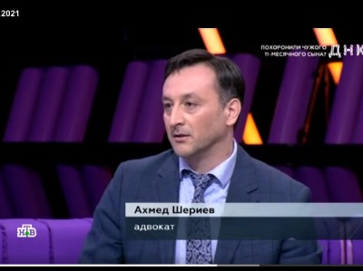

Одним из направлений семейных споров являются алиментные споры на содержание детей и супругов.
Чтобы правильно определить имеет ли право супруг или дети на алименты, в каком размере, необходимо обращаться к специалистам. Только опытный адвокат по алиментным спорам поможет разобраться во всех аспектах алиментных вопросов.
Адвокат по алиментам оказывает следующие услуги :
-
консультирует по алиментным обязательствам.
-
составляет договоры об алиментных обязательствах между супругами.
-
составляет заявления в суд о взыскании алиментов.
-
помощь в индексации задолженности по алиментам.
-
помощь по взысканию алиментов.
Консультация адвоката по алиментам.
8 (925) 502-40-09
8 (925) 502-40-09
Напишите нам на WhatsApp
Родители обязаны содержать своих несовершеннолетних детей. Порядок и форма предоставления содержания несовершеннолетним детям определяются родителями самостоятельно.
Родители вправе заключить соглашение о содержании своих несовершеннолетних детей (соглашение об уплате алиментов).
При отсутствии соглашения об уплате алиментов алименты на несовершеннолетних детей взыскиваются судом с их родителей ежемесячно в размере: на одного ребенка - одной четверти, на двух детей - одной трети, на трех и более детей - половины заработка и (или) иного дохода родителей.
Адвокаты по вопросам взыскания алиментов


Преимущества наших адвокатов по алиментам
-
Адвокаты Коллегии имеют значительный опыт ведения семейных дел
-
Адвокаты специализируются на семейных спорах
-
Адвокаты Коллегии, при оказании юридической помощи, руководствуются принципами конфиденциальности и добросовестности
Наши адвокаты - эксперты на ТВ каналах по семейным вопросам.

адвокат Шериев А.Н. - эксперт передачи ДНК на НТВ.
Адвокат по алиментным вопросам.
8 (925) 502-40-09
8 (925) 502-40-09
Напишите нам на WhatsApp
Стоимость услуг адвоката: